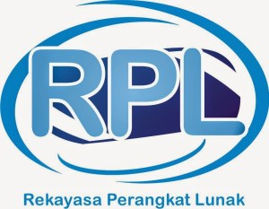

Sekolahku

Saya bersekolah di SMKN 2 Buduran Sidoarjo yang berlokasi di Jl. Jenggolo No.2 A,Bedrek, Siwalanpanji, Kec.Buduran, Kabupaten Sidoarjo, Jawa Timur. Di sekolahku terdapat 6 jurusan yaitu Rekayasa Perangkat Lunak(RPL), Multimedia, Akutansi, Pemasaran, Perbankan, dan Otomatisasi dan Tata Kelola Perkantoran(OTKP).

Jurusanku
Apa itu RPL? Rekayasa Perangkat Lunak adalah satu bidang profesi yang mendalami cara-cara pengembangan perangkat lunak termasuk pembuatan, pemeliharaan, manajemen organisasi pengembangan perangkat lunak dan manajemen kualitas. Source:Wikipedia